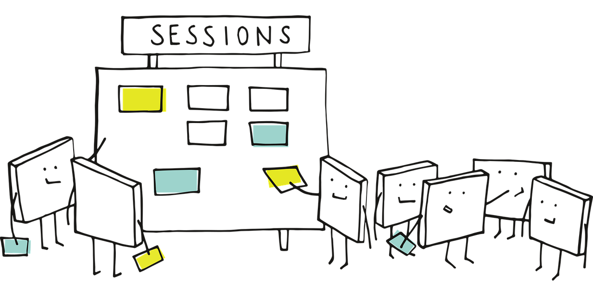
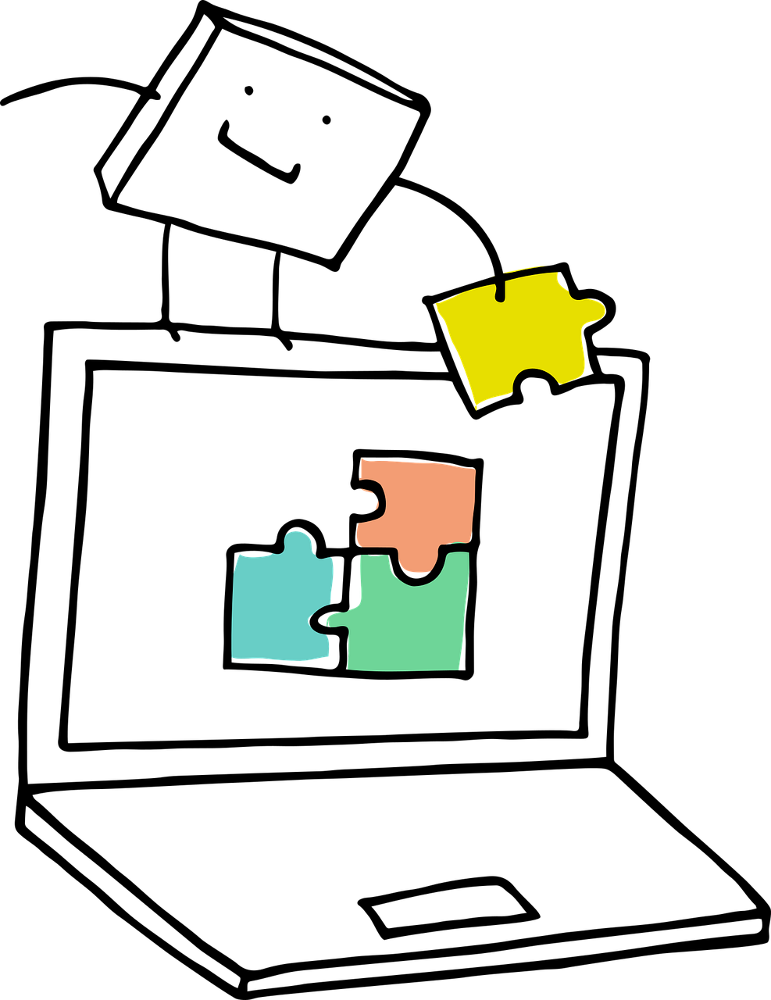

Course Lesson Plan

This section of the final deliverable presents a concise thirteen-week lesson plan for a fourth-year undergraduate course in causal inference. The lesson plan is limited in scope due to the following reasons:
The lesson plan encompasses comprehensive learning goals for each lecture throughout the entire term, with specific action verbs aligned with the revised Bloom’s taxonomy (Bloom et al. 1956) as defined by Anderson and Krathwohl (2001). This revised taxonomy organizes the six levels of the cognitive domain (related to learning) as follows:
- Remember: Recall information from long-term memory, including statistical concepts learned in previous courses.
- Understand: Comprehend the causal inference concepts covered in the classroom.
- Apply: Implement these causal inference concepts in various practical scenarios.
- Analyze: Identify parallels and use critical reasoning to establish patterns and connections. For example, this could involve comparing outputs from different strategies applied in the causal models taught in the course.
- Evaluate: Assess practical ideas based on established criteria and standards. This level may involve evaluating previously published causal studies.
- Create: Develop new causal studies based on all the knowledge acquired throughout this course.
Each week consists of two lecture sessions, each lasting one hour and twenty minutes.
The lesson plan connects each week to one or two of the eight stages outlined in the course roadmap. For reference, you can revisit the corresponding section of the deliverable. This structure is consistent with the previously described course format.
In each lecture, we will aim to align the learning goals with specific scholarly content, such as textbooks or academic papers.
The lesson plan does not include detailed instructional components for each lecture, such as time allocation, learning strategies, or in-class activities.
While we provide the course assessment structure (i.e., weights for assignments), this lesson plan does not elaborate on specific formative and summative assessments.
The final four weeks of the course will not be used to introduce students to additional modelling techniques in causal inference (as outlined in stages 4 and 5 of the roadmap) or to discuss general guidelines for interpreting, reporting, and storytelling in causal studies (as detailed in stages 6, 7, and 8 of the roadmap). Instead, students are expected to focus on the following major deliverables:
- Weeks 10 and 11 will be dedicated to a team-based appraisal presentation of an already published causal study, utilizing the roadmap covered throughout the course. There will not be a written report; only an oral presentation is required.
- Weeks 12 and 13 will focus on a team-based final project where students will conduct their final causal study using a provided dataset and following the causal roadmap. Instead of a final oral presentation, a written report will be submitted to replace the in-class final exam.
Therefore, for the above week, there will not be mapped scholarly materials.
1 Lecture Breakdown
Below is a weekly breakdown of the learning goals per lecture. Additionally, we provide a brief summary of each learning week and outline the expectations at the end of the respective two lectures.
1.1 Know your Research Question! (stage 1 in the roadmap)
During week 1, the instructor is expected to introduce students to a foundational mindset in causal inference, which will be linked to the course’s inferential roadmap. The primary goal for this week is to help students develop the skill to distinguish between statistical inquiries involving association or causation in scientific research. Additionally, students will be introduced to the causal roadmap, which consists of eight stages: (1) research question, (2) causal model representing knowledge, (3) counterfactuals and causal parameter definition, (4) statistical model definition, (5) model fitting, (6) result interpretation, (7) data analysis report. This roadmap will serve as the main pillar of the course’s learning strategy.

Furthermore, students will explore real-world examples to understand that causal inference is not merely an isolated statistical technique for modelling data (such as solely fitting ordinary-least squares or binary logistic regression to a dataset). Instead, it represents a comprehensive thought process about counterfactual outcomes (i.e., potential values of \(Y\)) and potential treatment interventions (i.e., potential values of \(X\)). By the end of this week, students should be able to comprehend the philosophical and practical differences between asking:
Is \(X\) associated with \(Y\)?
and
Does \(X\) cause \(Y\)?
1.1.1 Lecture 1
By the end of this lecture, students should be able to:
- Describe what causal inference is along with its usefulness in scientific research (remember level).
- Explain how causation and association differ via practical examples (understand level).
- Classify different types of research questions in terms causation and association (understand level).
- Identify the components of a causal questions, e.g., treatment, outcome, and population.
The above goals can be mapped to the following materials:
- Chapter 2 (Research Questions) from Huntington-Klein (2021) and Chapter 1 (A definition of causal effect) from Hernán (2024) and Roadmap Overview & Roadmap Step 0 - Research Question (Lecture 1a - Why Bother with Causal Inference?) from Petersen and Balzer (2014).
- Chapter 1 (Correlation, Association, and the Yule-Simpson Paradox) from Ding (2024) and Roadmap Overview & Roadmap Step 0 - Research Question (Lecture 1b - Causal vs. Statistical inference) from Petersen and Balzer (2014).
- Chapter 1 (Introduction - Do Not Confuse Correlation with Causality) from Cunningham (2021) and Roadmap Overview & Roadmap Step 0 - Research Question (Lecture 1c: The Causal Roadmap Steps 0-3) from Petersen and Balzer (2014).
- Chapters 2 (Randomized Experiments) and 3 (Observational Studies) from Hernán (2024) and Chapter 2 (Potential Outcomes) from Ding (2024).
1.1.2 Lecture 2
By the end of this lecture, students should be able to:
- Explain the steps of the causal inference roadmap (understand level).
- Examine real-life study descriptions to identify whether they pose a causal or association question (analyze level).
- Formulate well-structured causal questions based on a given observational or experimental context. (create level).
- Assess the validity and clarity of causal questions in peer-reviewed studies (evaluate level).
The above goals can be mapped to the following materials:
- Roadmap Overview & Roadmap Step 0 - Research Question (Lecture 1c - The Causal Roadmap) from Petersen and Balzer (2014). Recall that the roadmap for this course is inspired by this reference. Hence, this material can be used as a baseline to introduce our roadmap.
- For this learning goal, the instructor could provide a summary of the following four published papers (two of which pose causal questions, whereas the other two pose association questions):
- Causal questions:
- Association questions:
- Roadmap Overview & Roadmap Step 0 - Research Question (Lecture 1c - The Causal Roadmap) from Petersen and Balzer (2014).
- Morgan and Winship (2007) provide a fair list of referenced examples in Chapter 1 (Introduction), specifically in sections 1.3.1 (Broad Examples from Sociology, Economics, and Political Science) and 1.3.2 (Narrow and Specific Examples).
1.2 Using Graphical Models to Depict Causality (stage 2 in the roadmap)
During Week 2, students will have their first exposure to directed acyclic graphs (DAGs). According to the course roadmap, DAGs are graphical models that represent knowledge about causal inquiries, which we are expected to develop in collaboration with subject-matter experts. We will view DAGs as essential tools for visualizing and reasoning about causal relationships.

The week will begin with a formal introduction to DAG syntax and terminology. After that, students will engage in hands-on practice constructing DAGs based on real-world scenarios from various scientific fields. Additionally, we will differentiate between experimental, quasi-experimental, and observational studies to demonstrate how DAGs can help identify assumptions in different study designs. By the end of the week, students should understand why DAGs offer valuable insights into causal logic, which will be beneficial for the subsequent stages of the course roadmap.
1.2.1 Lecture 3
By the end of this lecture, students should be able to:
- Explain key components of DAGs, including nodes, directed edges, and acyclic structure (understand level).
- Illustrate how DAGs represent causal assumptions and the concept of d-separation (understand level).
- Compare DAGs derived from experimental, quasi-experimental, and observational designs to assess differences in identifiability (analyze level).
- Construct simple DAGs to represent real-life study scenarios (analyze level).
The above goals can be mapped to the following materials:
- Chapter 6 (Graphical Representation of Causal Effects) from Hernán (2024) and Chapter 6 (Causal Diagrams) from Huntington-Klein (2021).
- Chapter 6 (Graphical Representation of Causal Effects) from Hernán (2024).
- The following academic papers can be used to develop material to address this goal:
- “How to develop causal directed acyclic graphs for observational health research: a scoping review” by Poppe et al. (2025).
- “Reducing bias in experimental ecology through directed acyclic graphs” by Arif and Massey (2023)
- “Utilizing Causal Diagrams across Quasi-Experimental Approaches” by Arif and MacNeil (2022).
- Chapter 7 (Drawing Causal Diagrams) from Huntington-Klein (2021).
1.2.2 Lecture 4
By the end of this lecture, students should be able to:
- Create DAGs to represent hypothetical causal mechanisms based on subject-matter expertise (create level).
- Identify common structures in DAGs such as confounding, mediating, backdoor criterion, and colliding paths (analyze level),
- Evaluate the adequacy of DAGs constructed by peers or drawn from published studies, focusing on clarity and underlying assumptions (evaluate level).
- Differentiate between experimental, quasi-experimental, and observational study designs using DAGs to illustrate assumptions and limitations (understand level).
The above goals can be mapped to the following materials:
- To address this goal, the students could have hands-on practice with the cases depicted by Morgan and Winship (2007) provide a fair list of referenced examples in Chapter 1 (Introduction), specifically in sections 1.3.1 (Broad Examples from Sociology, Economics, and Political Science).
- Chapter 8 (Causal Paths and Closing Back Doors) from Huntington-Klein (2021), Chapter 7 (Confounding) from Hernán (2024), and Chapter 1 (Causal Graphs, Identification, and Models of Causal Exposure) from Morgan and Winship (2007).
- To address this goal, students are expected to assess the DAGs delivered in goal (1) while applying the concepts addressed in goal (2).
- The developed material from lecture 3, to address the respective goal (3), can be used to fulfil this goal.
1.3 Introduction to Counterfactuals (stage 3 in the roadmap)
Week 3 focuses on both the theoretical and practical aspects of counterfactuals. As outlined in the course roadmap, counterfactuals play a crucial role in the entire causal inference process. They are an essential component of the structural causal model (SCM), which is a mathematical framework for illustrating the causal relationships between variables within a given system. This SCM framework will also provide students with computational tools to connect DAGs, discussed in week 2, with counterfactual reasoning.
The workflow for this week begins with defining the DAG in the context of a causal inference inquiry within a specific system. Students will then derive a SCM composed of equations that represent the data-generating process for each variable. These equations explicitly illustrate the mechanisms that produce counterfactual outcomes, such as:
What would happen to an outcome \(Y\) if treatment \(X\) were set to a different value?
This type of inquiry is essential for formulating and interpreting what we refer to as causal parameters, such as the average treatment effect (ATE).

By the end of the week, students are expected to learn how to use code-based simulations in R (R Core Team 2024) or Python (Van Rossum and Drake 2009) to apply the logic associated with DAGs, SCMs, and counterfactuals through simple scenarios. They will simulate interventions, explore counterfactuals, and compute causal parameters to address research questions effectively. This process specifically involves examining how potential outcomes arise from different interventions, which allows us to connect our findings back to the DAG and ultimately enables us to produce valid causal claims. It is essential to emphasize to students that our simulated causal parameters must align with the research question(s) established in stage 1 of the roadmap.
1.3.1 Lecture 5
By the end of this lecture, students should be able to:
- Explain the structure and components of a SCM derived from a DAG (understand level).
- Explain the conceptual link between structural equations and counterfactual outcomes (understand level).
- Implement simple SCMs using code to simulate counterfactual scenarios (apply level).
- Classify the types of causal questions that we can answer from a given SCM and DAG (understand level).
The above goals can be mapped to the following materials:
- Chapters 3 (Observational studies) and 5 (Interaction) from Hernán (2024). These chapters offer a comprehensive theoretical content. For in-class material, Roadmap Step 1 - Causal Model (Lecture 2a - Intro to Structural Causal Models), from Petersen and Balzer (2014), is a fair starting point.
- Chapter 2 (The Counterfactual Model) from Morgan and Winship (2007); this chapter offers a comprehensive theoretical content. For in-class material, Roadmap Step 1 - Causal Model (Lecture 2b - How SCMs encode causal assumptionss), from Petersen and Balzer (2014), is a fair starting point.
- Chapter 4 (Potential Outcomes Causal Model), from Cunningham (2021), provides simple coding examples via
RandPythonthat the instructor could use in their in-class material. - For in-class material, Roadmap Step 1 - Causal Model (Lecture 2c - SCMs & Directed Acyclic Graphs), from Petersen and Balzer (2014), is a fair starting point. Moreover, students can continue with the DAGs constructed to address goal (4) from lecture 4 to deliver the corresponding SCMs for the corresponding experimental, quasi-experimental, and observational designs.
1.3.2 Lecture 6
By the end of this lecture, students should be able to:
- Interpret counterfactual quantities such as \(Y^a\), the potential outcome under treatment level \(a\) (understand level).
- Implement causal parameters (e.g.; ATE or average treatment effect on the treated, ATT) from simulated SCMs using counterfactual logic (apply level).
- Identify causal parameters with specific scientific research questions (apply level).
- Design small simulation exercises to test assumptions underlying counterfactual inference (create level).
The above goals can be mapped to the following materials:
- Chapters 3 (Observational studies) and 5 (Interaction) from Hernán (2024). These chapters offer a comprehensive theoretical content.
- There are two potential sources of material we can use to fulfill this goal:
- The first one is less technical and it is Chapter 10 - Treatment Effects from Huntington-Klein (2021). If the instructor chooses to use more technical content during class time, this might be an ideal pre-lecture material.
- The second one is Chapter 4 (Potential Outcomes Causal Model), from Cunningham (2021). This material is more technical.
- Students are expected to fulfill this learning goal by using the SCMs delivered in lecture 5 for its corresponding goal (4).
- Students are expected to continue working with the SCMs from the above goal (3). Now, it is time to code the SCMs delivered from the corresponding experimental, quasi-experimental, and observational designs.
1.4 Defining the Statistical Model: Observed Data and Identifiability Conditions (stage 4 in the roadmap)
During week 4, the instructor is expected to connect the causal model represented by DAGs and SCMs with the corresponding statistical model, with a focus on the identifiability of causal parameters. We start by recalling DAGs as formal representations of causal assumptions. From these DAGs, we construct SCMs, specifying structural equations and endogenous variables that determine counterfactual outcomes. Once the SCM is defined, we analyze how these counterfactuals relate to observed data, emphasizing that only a subset of potential outcomes can be observed.
A key focus this week is on the spectrum of assumptions in statistical modelling. Parametric models specify a complete probability distribution (for example, ordinary least-squares regression with normally distributed errors), while semi-parametric models relax some of these specifications (like Cox models). Non-parametric models impose minimal assumptions on the functional form, relying solely on the assumptions encoded in the DAG.

In the second half of the week, we define identifiability as the condition under which a causal parameter (such as the ATE) can be expressed as a function of the observed data distribution. Students will learn to utilize d-separation and the back-door criterion as tools to determine when identifiability holds, given the assumptions of no unmeasured confounding and positivity.
We will evaluate how each type of statistical model (parametric, semi-parametric, and non-parametric) impacts identifiability. The week will conclude with a comparative discussion across disciplines—such as epidemiology, economics, and statistics—of the various terminologies and conceptual frameworks used to express identifiability conditions. For example, students will explore the relationship between the stable Unit treatment value assumption (SUTVA), ignorability in econometrics, and conditional exchangeability in epidemiology. This reflection will help students understand how each domain approaches the identifiability problem through its unique perspective.
1.4.1 Lecture 7
By the end of this lecture, students should be able to:
- Define how DAGs and SCMs formalize causal assumptions and determine potential outcomes (remember level).
- Construct a SCM from a DAG using structural equations and endogenous variables (apply level).
- Examine the relationship between SCMs and observed data, identifying which counterfactuals are observed versus unobserved (analyze level).
- Distinguish between parametric, semi-parametric, and non-parametric statistical models, and their implications for inference (analyze level).
The above goals can be mapped to the following materials:
- Roadmap Step 2 - Counterfactuals & Causal Effects (Lecture 3a - Defining Counterfactuals) from Petersen and Balzer (2014).
- Roadmap Step 2 - Counterfactuals & Causal Effects (Lecture 3b - Deriving Counterfactuals from the Causal Model) and Lecture 3c (Using Counterfactuals to Define Causal Effects) from Petersen and Balzer (2014).
- Roadmap Step 3 - Observed Data (Lecture 5a - Specify the observed data & their link to the causal model and Lecture 5b - Causal models & (in)dependence in the observed data) from Petersen and Balzer (2014).
- Roadmap Step 3 - Observed Data (Lecture 5c - Defining the Statistical Model) from Petersen and Balzer (2014).
1.4.2 Lecture 8
By the end of this lecture, students should be able to:
- Determine whether a causal parameter is identifiable using d-separation and the back-door criterion (evaluate level).
- Assess whether key identifiability conditions—no unmeasured confounding and positivity—hold in study designs (evaluate level).
- Compare how different statistical modelling assumptions (parametric, semi, non-parametric) affect identifiability (understand level).
- Build a visual map that translates vocabulary across disciplines: SUTVA, ignorability, independence, and exchangeability (create level).
Chapter 5 - Identification, from Huntington-Klein (2021), offers a smooth introduction to identifiability. It could be used as a pre-reading.
The above goals can be mapped to the following materials:
- Chapter 3 (Observational Studies) from Hernán (2024). Also, Roadmap Step 4 - Identifiability & Step 5 - Estimation Problem (Lecture 6a - Overview & Intuition for Identifiability and Lecture 6c - The Backdoor Criterion) from Petersen and Balzer (2014).
- Roadmap Step 4 - Identifiability & Step 5 - Estimation Problem (Lecture 6d - The Positivity Assumption) from Petersen and Balzer (2014).
- Chapter 11 (Why Model?) from Hernán (2024)
- Section 4.1.5, from Cunningham (2021), provides a detailed elaboration on SUTVA. On the other hand, Kamath, Graham, and Naylor (2023) provide a chapter elaborating on the rest of the terms.
1.5 Inverse Probability Weights (stages 4 and 5 in the roadmap)
Week 5 introduces inverse probability weighting (IPW) as the first method in the course to estimate causal effects from observational data. Building on the identifiability assumptions covered in week 4, we now turn to statistical estimation of causal parameters using weights derived from the treatment assignment mechanism. Students will be guided through both the conceptual rationale and mathematical foundations of IPW. Specifically, we will explore how IPW constructs a pseudo-population in which treatment is independent of confounders, thereby recovering the causal estimand from observed data. We emphasize the critical conditions under which this estimator is valid, especially the no unmeasured confounding and positivity assumptions.
The week is organized into two sessions: the first develops theoretical insights on the IPW framework, and the second focuses on practical implementation using R. Students are expected to learn how to estimate weights, assess their quality, and implement diagnostic tools to detect violations of key assumptions such as positivity. We will use real and simulated datasets to visualize weight distributions, evaluate performance, and interpret the causal estimates obtained through IPW. This week also provides an opportunity to connect the theoretical roadmap to concrete software tools, such as the ipw (van der Wal and Geskus 2011) and WeightIt (Greifer 2025) R packages.
1.5.1 Lecture 9
By the end of this lecture, students should be able to:
- Define IPWs and describe their purpose in causal effect estimation (remember level).
- Explain how IPW adjusts for measured confounding by reweighting observations to achieve exchangeability (understand level).
- Examine the assumptions required for valid IPW estimation, including positivity and no unmeasured confounding, and discuss what happens when these assumptions are violated (analyze level).
The above goals can be mapped to the following materials:
- Chapter 2 (Randomized Experiments), from Hernán (2024), where Section 2.4 specifically introduces IPW in a non-parametric way. Then, Chapter 12 (IP Weighting and Marginal Estructural Models) elaborates on IPW in a parametric way. Also, Roadmap Step 6B - Estimation with IPW (Lecture 9b - Intro to the IPW Estimator), from Petersen and Balzer (2014), offers a fair starting point for in-class material.
- Chapter 12 (IP Weighting and Marginal Estructural Models) provides a complete technical elaboration. Moreover, Roadmap Step 6B - Estimation with IPW (Lecture 9b - Intuition and Implementation of IPW), from Petersen and Balzer (2014), offers a fair starting point for in-class material.
- Chapter 12 (IP Weighting and Marginal Estructural Models) provides a complete technical elaboration. Furthermore, Roadmap Step 6B - Estimation with IPW (Lecture 9c - Impact of Positivity Violations on Estimator Performance), from Petersen and Balzer (2014), offers a fair starting point for in-class material.
1.5.2 Lecture 10
By the end of this lecture, students should be able to:
- Utilize IPW to estimate average treatment effects using regression models in
R(apply level). - Create a simulated dataset with known treatment effects and counterfactuals to evaluate the performance of IPW under controlled conditions (create level).
- Assess the quality of estimated IP weights by visualizing their distribution, identifying extreme weights, and interpreting ATE sensitivity to such weights.
The above goals can be mapped to the following materials:
- van der Wal and Geskus (2011) provide an overview of the
ipwpackage with general theoretical background on IPW along with examples via real data. Heiss (2020) provides an example via real data to illustrate both the use ofipwandWeightIt - van der Wal and Geskus (2011) provide an simulated example via the package
ipw. - Roadmap Step 6B - Estimation with IPW (Lecture 9c - Impact of Positivity Violations on Estimator Performance), from Petersen and Balzer (2014), offers a fair starting point for in-class material. Moreover, they provide a full lab exercise on IPW.
1.6 G-estimation for Causal Parameters (stages 4 and 5 in the roadmap)
- Focus on ATE, average treatment effect.
- Introduction to G-estimation: parametric and non-parametric.
1.6.1 Lecture 11
1.6.2 Lecture 12
1.7 Week 7: Causal mediation analysis (STEPS 4 and 5 in the roadmap)
- Introduction to causal mediation analysis.
- Parametric and non-parametric.
1.8 Week 8: Interpretation and report (STEPS 6 and 7 in the roadmap)
1.9 Week 9: Storytelling (STEP 8 in the roadmap)
1.10 Week 10: Appraisal of causal analysis using the roadmap
- Review an existing causal analysis (i.e., a published research paper) using the causal roadmap covered in class.
- This is a team-based work.
1.11 Week 11: Presentation of appraisals
Team presentations.
1.12 Week 12: Analysis of worked examples while contrasting them with the causal roadmap
- This is a team-based work (using the previous appraisal teams).
- General overview of the final project (first lecture).
- Introduction to the datasets (first lecture).
- Perform a case study, using a dataset not available to students to pick from (it will be the same dataset for all teams), using the causal roadmap (second lecture).
1.13 Week 13: Analysis of worked examples while contrasting them with the causal roadmap (II)
- We will use the last two lectures for in-class group work on the final project (i.e., whose deliverable is a written report).
- Note that there is no final exam in this course.
“Estimating Causal Effects from Epidemiological Data” from Hernán and Robins (2006).